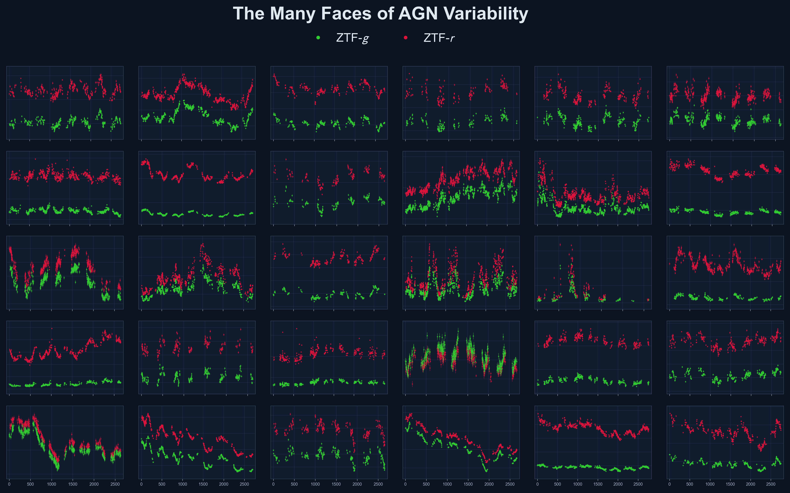

Understanding AGN variability: A metric-based variability pipeline
I work on the development of a Python-based pipeline for the systematic computation and analysis of variability metrics from AGN light curves. I explore the potential uses of our pipeline to identify distinct variability behaviors by characterizing ~14,000 AGN light curves from the Zwicky Transient Facility (ZTF). I assess the potential uses of metrics to identify extreme variability events, and explore their use for clustering analysis in UMAP.
The metric pipeline intends to be a useful tool to characterize the diversity of AGN variability behaviors and identify promising science cases for follow-up. Its preliminary use has motivated the preparation of an observing proposals to confirm new CL-AGN events.
